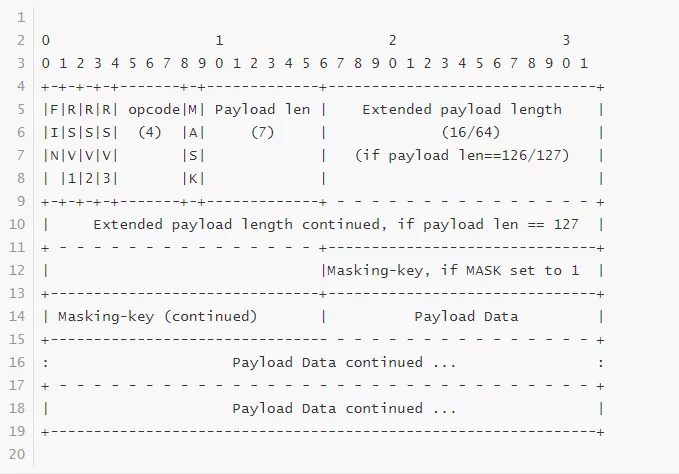

从零开发一个WebSocket服务器
WebSocket 协议是为了解决 http 协议的无状态、短连接（通常是）和服务端无法主动给客户端推送数据等问题而开发的新型协议，其通信基础也是基于 TCP。由于较旧的浏览器可能不支持 WebSocket 协议，所以使用 WebSocket 协议的通信双方在进行 TCP 三次握手之后，还要再额外地进行一次握手，这一次的握手通信双方的报文格式是基于 HTTP 协议改造的。
WebSocket 握手过程
TCP 三次握手的过程我们就不在这里赘述了，任何一本网络通信书籍上都有详细的介绍。我们这里来介绍一下 WebSocket 通信最后一次的握手过程。
握手开始后，一方给另外一方发送一个 http 协议格式的报文，这个报文格式大致如下：
GET /realtime HTTP/1.1\r\n
Host: 127.0.0.1:9989\r\n
Connection: Upgrade\r\n
Pragma: no-cache\r\n
Cache-Control: no-cache\r\n
User-Agent: Mozilla/5.0 (Windows NT 10.0; Win64; x64)\r\n
Upgrade: websocket\r\n
Origin: http://xyz.com\r\n
Sec-WebSocket-Version: 13\r\n
Accept-Encoding: gzip, deflate, br\r\n
Accept-Language: zh-CN,zh;q=0.9,en;q=0.8\r\n
Sec-WebSocket-Key: IqcAWodjyPDJuhGgZwkpKg==\r\n
Sec-WebSocket-Extensions: permessage-deflate; client_max_window_bits\r\n
\r\n
对这个格式有如下要求：
- 握手必须是一个有效的 HTTP 请求；
- 请求的方法必须为 GET，且 HTTP 版本必须是 1.1；
- 请求必须包含 Host 字段信息；
- 请求必须包含 Upgrade字段信息，值必须为 websocket；
- 请求必须包含 Connection 字段信息，值必须为 Upgrade；
- 请求必须包含 Sec-WebSocket-Key 字段，该字段值是客户端的标识编码成 base64 格式；
- 请求必须包含 Sec-WebSocket-Version 字段信息，值必须为 13；
- 请求必须包含 Origin 字段；
- 请求可能包含 Sec-WebSocket-Protocol 字段，规定子协议；
- 请求可能包含 Sec-WebSocket-Extensions字段规定协议扩展；
- 请求可能包含其他字段，如 cookie 等。
对端收到该数据包后如果支持 WebSocket 协议，会回复一个 http 格式的应答，这个应答报文的格式大致如下：
HTTP/1.1 101 Switching Protocols\r\n
Upgrade: websocket\r\n
Connection: Upgrade\r\n
Sec-WebSocket-Accept: 5wC5L6joP6tl31zpj9OlCNv9Jy4=\r\n
\r\n
上面列出了应答报文中必须包含的几个字段和对应的值，即 Upgrade、Connection、Sec-WebSocket-Accept，注意：第一行必须是 HTTP/1.1 101 Switching Protocols\r\n。
对于字段 Sec-WebSocket-Accept 字段，其值是根据对端传过来的 Sec-WebSocket-Key 的值经过一定的算法计算出来的，这样应答的双方才能匹配。算法如下：
- 将 Sec-WebSocket-Key 值与固定字符串“258EAFA5-E914-47DA-95CA-C5AB0DC85B11” 进行拼接；
- 将拼接后的字符串进行 SHA-1 处理，然后将结果再进行 base64 编码。
算法公式：
mask = "258EAFA5-E914-47DA-95CA-C5AB0DC85B11"; // 这是算法中要用到的固定字符串
accept = base64( sha1( Sec-WebSocket-Key + mask ) );
我用 C++ 实现了该算法：
namespace uWS {
struct WebSocketHandshake {
template <int N, typename T>
struct static_for {
void operator()(uint32_t *a, uint32_t *b) {
static_for<N - 1, T>()(a, b);
T::template f<N - 1>(a, b);
}
};
template <typename T>
struct static_for<0, T> {
void operator()(uint32_t *a, uint32_t *hash) {}
};
template <int state>
struct Sha1Loop {
static inline uint32_t rol(uint32_t value, size_t bits) {return (value << bits) | (value >> (32 - bits));}
static inline uint32_t blk(uint32_t b[16], size_t i) {
return rol(b[(i + 13) & 15] ^ b[(i + 8) & 15] ^ b[(i + 2) & 15] ^ b[i], 1);
}
template <int i>
static inline void f(uint32_t *a, uint32_t *b) {
switch (state) {
case 1:
a[i % 5] += ((a[(3 + i) % 5] & (a[(2 + i) % 5] ^ a[(1 + i) % 5])) ^ a[(1 + i) % 5]) + b[i] + 0x5a827999 + rol(a[(4 + i) % 5], 5);
a[(3 + i) % 5] = rol(a[(3 + i) % 5], 30);
break;
case 2:
b[i] = blk(b, i);
a[(1 + i) % 5] += ((a[(4 + i) % 5] & (a[(3 + i) % 5] ^ a[(2 + i) % 5])) ^ a[(2 + i) % 5]) + b[i] + 0x5a827999 + rol(a[(5 + i) % 5], 5);
a[(4 + i) % 5] = rol(a[(4 + i) % 5], 30);
break;
case 3:
b[(i + 4) % 16] = blk(b, (i + 4) % 16);
a[i % 5] += (a[(3 + i) % 5] ^ a[(2 + i) % 5] ^ a[(1 + i) % 5]) + b[(i + 4) % 16] + 0x6ed9eba1 + rol(a[(4 + i) % 5], 5);
a[(3 + i) % 5] = rol(a[(3 + i) % 5], 30);
break;
case 4:
b[(i + 8) % 16] = blk(b, (i + 8) % 16);
a[i % 5] += (((a[(3 + i) % 5] | a[(2 + i) % 5]) & a[(1 + i) % 5]) | (a[(3 + i) % 5] & a[(2 + i) % 5])) + b[(i + 8) % 16] + 0x8f1bbcdc + rol(a[(4 + i) % 5], 5);
a[(3 + i) % 5] = rol(a[(3 + i) % 5], 30);
break;
case 5:
b[(i + 12) % 16] = blk(b, (i + 12) % 16);
a[i % 5] += (a[(3 + i) % 5] ^ a[(2 + i) % 5] ^ a[(1 + i) % 5]) + b[(i + 12) % 16] + 0xca62c1d6 + rol(a[(4 + i) % 5], 5);
a[(3 + i) % 5] = rol(a[(3 + i) % 5], 30);
break;
case 6:
b[i] += a[4 - i];
}
}
};
/**
* sha1 函数的实现
*/
static inline void sha1(uint32_t hash[5], uint32_t b[16]) {
uint32_t a[5] = {hash[4], hash[3], hash[2], hash[1], hash[0]};
static_for<16, Sha1Loop<1>>()(a, b);
static_for<4, Sha1Loop<2>>()(a, b);
static_for<20, Sha1Loop<3>>()(a, b);
static_for<20, Sha1Loop<4>>()(a, b);
static_for<20, Sha1Loop<5>>()(a, b);
static_for<5, Sha1Loop<6>>()(a, hash);
}
/**
* base64 编码函数
*/
static inline void base64(unsigned char *src, char *dst) {
const char *b64 = "ABCDEFGHIJKLMNOPQRSTUVWXYZabcdefghijklmnopqrstuvwxyz0123456789+/";
for (int i = 0; i < 18; i += 3) {
*dst++ = b64[(src[i] >> 2) & 63];
*dst++ = b64[((src[i] & 3) << 4) | ((src[i + 1] & 240) >> 4)];
*dst++ = b64[((src[i + 1] & 15) << 2) | ((src[i + 2] & 192) >> 6)];
*dst++ = b64[src[i + 2] & 63];
}
*dst++ = b64[(src[18] >> 2) & 63];
*dst++ = b64[((src[18] & 3) << 4) | ((src[19] & 240) >> 4)];
*dst++ = b64[((src[19] & 15) << 2)];
*dst++ = '=';
}
public:
/**
* 生成 Sec-WebSocket-Accept 算法
* @param input 对端传过来的Sec-WebSocket-Key值
* @param output 存放生成的 Sec-WebSocket-Accept 值
*/
static inline void generate(const char input[24], char output[28]) {
uint32_t b_output[5] = {
0x67452301, 0xefcdab89, 0x98badcfe, 0x10325476, 0xc3d2e1f0
};
uint32_t b_input[16] = {
0, 0, 0, 0, 0, 0, 0x32353845, 0x41464135, 0x2d453931, 0x342d3437, 0x44412d39,
0x3543412d, 0x43354142, 0x30444338, 0x35423131, 0x80000000
};
for (int i = 0; i < 6; i++) {
b_input[i] = (input[4 * i + 3] & 0xff) | (input[4 * i + 2] & 0xff) << 8 | (input[4 * i + 1] & 0xff) << 16 | (input[4 * i + 0] & 0xff) << 24;
}
sha1(b_output, b_input);
uint32_t last_b[16] = {0, 0, 0, 0, 0, 0, 0, 0, 0, 0, 0, 0, 0, 0, 0, 480};
sha1(b_output, last_b);
for (int i = 0; i < 5; i++) {
uint32_t tmp = b_output[i];
char *bytes = (char *) &b_output[i];
bytes[3] = tmp & 0xff;
bytes[2] = (tmp >> 8) & 0xff;
bytes[1] = (tmp >> 16) & 0xff;
bytes[0] = (tmp >> 24) & 0xff;
}
base64((unsigned char *) b_output, output);
}
};
握手完成之后，通信双方就可以保持连接并相互发送数据了。
WebSocket 协议格式
WebSocket 协议格式的 RFC 文档可以参见：[]https://tools.ietf.org/html/rfc6455。
常听人说 WebSocket 协议是基于 http 协议的，因此我在刚接触 WebSocket 协议时总以为每个 WebSocket 数据包都是 http 格式，其实不然，WebSocket 协议除了上文中提到的这次握手过程中使用的数据格式是 http 协议格式，之后的通信双方使用的是另外一种自定义格式。每一个 WebSocket 数据包我们称之为一个 Frame（帧），其格式图如下：

我们来逐一介绍一下上文中各字段的含义：
第一个字节内容：
FIN 标志，占第一个字节中的第一位（bit），即一字节中的最高位（一字节等于 8 位），该标志置 0 时表示当前包未结束后续有该包的分片，置 1 时表示当前包已结束后续无该包的分片。我们在解包时，如果发现该标志为 1，则需要将当前包的“包体”数据（即图中 Payload Data）缓存起来，与后续包分片组装在一起，才是一个完整的包体数据。
RSV1、RSV2、RSV3 每个占一位，一共三位，这三个位是保留字段（默认都是 0），你可以用它们作为通信的双方协商好的一些特殊标志；
opCode 操作类型，占四位，目前操作类型及其取值如下：
// 4 bits enum OpCode { //表示后续还有新的 Frame CONTINUATION_FRAME = 0x0, //包体是文本类型的Frame TEXT_FRAME = 0x1, //包体是二进制类型的 Frame BINARY_FRAME = 0x2, //保留值 RESERVED1 = 0x3, RESERVED2 = 0x4, RESERVED3 = 0x5, RESERVED4 = 0x6, RESERVED5 = 0x7, //建议对端关闭的 Frame CLOSE = 0x8, //心跳包中的 ping Frame PING = 0x9, //心跳包中的 pong Frame PONG = 0xA, //保留值 RESERVED6 = 0xB, RESERVED7 = 0xC, RESERVED8 = 0xD, RESERVED9 = 0xE, RESERVED10 = 0xF };
第二个字节内容：
mask 标志，占一位，该标志为 1 时，表明该 Frame 在包体长度字段后面携带 4 个字节的 masking-key 信息，为 0 时则没有 masking-key 信息。masking-key 信息下文会介绍。
Payload len，占七位，该字段表示包体的长度信息。由于 Payload length 值使用了一个字节的低七位（7 bit），因此其能表示的长度范围是 0 ~ 127，其中 126 和 127 被当做特殊标志使用。
当该字段值是 0~125 时，表示跟在 masking-key 字段后面的就是包体内容长度；当该值是 126 时，接下来的 2 个字节内容表示跟在 masking-key 字段后面的包体内容的长度（即图中的 Extended Payload Length）。由于 2 个字节最大表示的无符号整数是 0xFFFF（十进制是 65535， 编译器提供了一个宏 UINT16_MAX 来表示这个值）。如果包体长度超过 65535，包长度就记录不下了，此时应该将 Payload length 设置为 127，以使用更多的字节数来表示包体长度。
当 Payload length 是 127 时，接下来则用 8 个字节内容表示跟在 masking-key 字段后面的包体内容的长度（Extended Payload Length）。
总结起来，Payload length = 0 ~ 125，Extended Payload Length 不存在， 0 字节；Payload length = 126, Extended Payload Length 占 2 字节；Payload length = 127 时，Extended Payload Length 占 8 字节。
另外需要注意的是，当 Payload length = 125 或 126 时接下来存储实际包长的 2 字节或 8 字节，其值必须转换为网络字节序（Big Endian）。
- Masking-key ，如果前面的 mask 标志设置成 1，则该字段存在，占 4 个字节；反之，则 Frame 中不存在存储 masking-key 字段的字节。
网络上一些资料说，客户端（主动发起握手请求的一方）给服务器（被动接受握手的另一方）发的 frame 信息（包信息），mask 标志必须是 1，而服务器给客户端发送的 frame 信息中 mask 标志是 0。因此，客户端发给服务器端的数据帧中存在 4 字节的 masking-key，而服务器端发给客户端的数据帧中不存在 masking-key 信息。
我在 Websocket 协议的 RFC 文档中并没有看到有这种强行规定，另外在研究了一些 websocket 库的实现后发现，此结论并不一定成立，客户端发送的数据也可能没有设置 mask 标志。
如果存在 masking-key 信息，则数据帧中的数据（图中 Payload Data）都是经过与 masking-key 进行运算后的内容。无论是将原始数据与 masking-key 运算后得到传输的数据，还是将传输的数据还原成原始数据，其算法都是一样的。算法如下：
假设：
original-octet-i：为原始数据的第 i 字节。
transformed-octet-i：为转换后的数据的第 i 字节。
j：为i mod 4的结果。
masking-key-octet-j：为 mask key 第 j 字节。
算法描述为：original-octet-i 与 masking-key-octet-j 异或后，得到 transformed-octet-i。
j = i MOD 4
transformed-octet-i = original-octet-i XOR masking-key-octet-j
我用 C++ 实现了该算法：
/**
* @param src 函数调用前是原始需要传输的数据，函数调用后是mask或者unmask后的内容
* @param maskingKey 四字节
*/
void maskAndUnmaskData(std::string& src, const char* maskingKey)
{
char j;
for (size_t n = 0; n < src.length(); ++n)
{
j = n % 4;
src[n] = src[n] ^ maskingKey[j];
}
}
使用上面的描述可能还不是太清楚，我们举个例子，假设有一个客户端发送给服务器的数据包，那么 mask = 1，即存在 4 字节的 masking-key，当包体数据长度在 0 ~ 125 之间时，该包的结构：
第 1 个字节第 0 位 => FIN
第 1 个字节第 1 ~ 3位 => RSV1 + RSV2 + RSV3
第 1 个字节第 4 ~ 7位 => opcode
第 2 个字节第 0 位 => mask(等于 1)
第 2 个字节第 1 ~ 7位 => 包体长度
第 3 ~ 6 个字节 => masking-key
第 7 个字节及以后 => 包体内容
这种情形，包头总共 6 个字节。
当包体数据长度大于125 且小于等于 UINT16_MAX 时，该包的结构：
第 1 个字节第 0 位 => FIN
第 1 个字节第 1 ~ 3位 => RSV1 + RSV2 + RSV3
第 1 个字节第 4 ~ 7位 => opcode
第 2 个字节第 0 位 => mask(等于 1)
第 2 个字节第 1 ~ 7位 => 开启扩展包头长度标志，值为 126
第 3 ~ 4 个字节 => 包头长度
第 5 ~ 8 个字节 => masking-key
第 9 个字节及以后 => 包体内容
这种情形，包头总共 8 个字节。
当包体数据长度大于 UINT16_MAX 时，该包的结构：
第 1 个字节第 0 位 => FIN
第 1 个字节第 1 ~ 3位 => RSV1 + RSV2 + RSV3
第 1 个字节第 4 ~ 7位 => opcode
第 2 个字节第 0 位 => mask(等于 1)
第 2 个字节第 1 ~ 7位 => 开启扩展包头长度标志，值为 127
第 3 ~ 10 个字节 => 包头长度
第 11 ~ 14 个字节 => masking-key
第 15 个字节及以后 => 包体内容
这种情形，包头总共 14 个字节。由于存储包体长度使用 8 字节存储（无符号），因此最大包体长度是 0xFFFFFFFFFFFFFFFF，这是一个非常大的数字，但实际开发中，我们用不到这么长的包体，且当包体超过一定值时，我们就应该分包（分片）了。
分包的逻辑经过前面的分析也很简单，假设将一个包分成 3 片，那么应将第一个和第二个包片的第一个字节的第一位 FIN 设置为 0，OpCode 设置为 CONTINUATION_FRAME（也是 0）；第三个包片 FIN 设置为 1，表示该包至此就结束了，OpCode 设置为想要的类型（如 TEXT_FRAME、BINARY_FRAME 等）。对端收到该包时，如果发现标志 FIN = 0 或 OpCode = 0，将该包包体的数据暂存起来，直到收到 FIN = 1，OpCode ≠ 0 的包，将该包的数据与前面收到的数据放在一起，组装成一个完整的业务数据。示例代码如下：
//某次解包后得到包体 payloadData，根据 FIN 标志判断，
//如果 FIN = true，则说明一个完整的业务数据包已经收完整，
//调用 processPackage() 函数处理该业务数据
//否则，暂存于 m_strParsedData 中
//每次处理完一个完整的业务包数据，即将暂存区m_strParsedData中的数据清空
if (FIN)
{
m_strParsedData.append(payloadData);
processPackage(m_strParsedData);
m_strParsedData.clear();
}
else
{
m_strParsedData.append(payloadData);
}
WebSocket 压缩格式
WebSocket 对于包体也支持压缩的，是否需要开启压缩需要通信双方在握手时进行协商。让我们再看一下握手时主动发起一方的包内容：
GET /realtime HTTP/1.1\r\n
Host: 127.0.0.1:9989\r\n
Connection: Upgrade\r\n
Pragma: no-cache\r\n
Cache-Control: no-cache\r\n
User-Agent: Mozilla/5.0 (Windows NT 10.0; Win64; x64)\r\n
Upgrade: websocket\r\n
Origin: http://xyz.com\r\n
Sec-WebSocket-Version: 13\r\n
Accept-Encoding: gzip, deflate, br\r\n
Accept-Language: zh-CN,zh;q=0.9,en;q=0.8\r\n
Sec-WebSocket-Key: IqcAWodjyPDJuhGgZwkpKg==\r\n
Sec-WebSocket-Extensions: permessage-deflate; client_max_window_bits\r\n
\r\n
在该包中 Sec-WebSocket-Extensions 字段中有一个值 permessage-deflate，如果发起方支持压缩，在发起握手时将包中带有该标志，对端收到后，如果也支持压缩，则在应答的包也带有该字段，反之不带该标志即表示不支持压缩。例如：
HTTP/1.1 101 Switching Protocols\r\n
Upgrade: websocket\r\n
Connection: Upgrade\r\n
Sec-WebSocket-Accept: 5wC5L6joP6tl31zpj9OlCNv9Jy4=\r\n
Sec-WebSocket-Extensions: permessage-deflate; client_no_context_takeover
\r\n
如果双方都支持压缩，此后通信的包中的包体部分都是经过压缩后的，反之是未压缩过的。在解完包得到包体（即 Payload Data） 后，如果有握手时有压缩标志并且乙方也回复了支持压缩，则需要对该包体进行解压；同理，在发数据组装 WebSocket 包时，需要先将包体（即 Payload Data）进行压缩。
收到包需要解压示例代码：
bool MyWebSocketSession::processPackage(const std::string& data)
{
std::string out;
//m_bClientCompressed在握手确定是否支持压缩
if (m_bClientCompressed)
{
//解压
if (!ZlibUtil::inflate(data, out))
{
LOGE("uncompress failed, dataLength: %d", data.length());
return false;
}
}
else
out = data;
//如果不需要解压，则out=data，反之则out是解压后的数据
LOGI("receid data: %s", out.c_str());
return Process(out);
}
对包进行压缩的算法：
size_t dataLength = data.length();
std::string destbuf;
if (m_bClientCompressed)
{
//按需压缩
if (!ZlibUtil::deflate(data, destbuf))
{
LOGE("compress buf error, data: %s", data.c_str());
return;
}
}
else
destbuf = data;
LOGI("destbuf.length(): %d", destbuf.length());
压缩和解压算法即 gzip 压缩算法。
由于公众号文章最大是 5000 字数限制，本文原文一共有 12000 字，公众号发文时有省略。如果想获取完整的文章请在【高性能服务器开发】公众号后台回复 关键字【websocket协议分析】。获取文中完整源码，请在公众号后台回复关键字【websocket源码】。